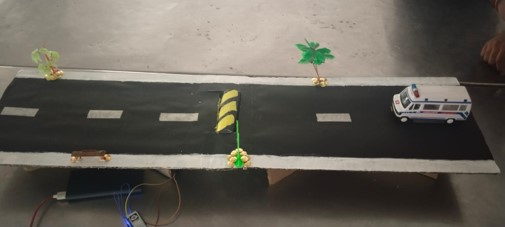

About Me
Hi, I'm Vruthika L S, a passionate Web Developer with over 2 years of experience in designing, developing, and maintaining dynamic web applications. I'm proficient in both front-end technologies like HTML, CSS, and JavaScript, as well as back-end technologies like Python and Django. My strengths lie in problem-solving, collaboration, and staying up-to-date with the latest trends in web development to ensure my projects are always at the forefront. I'm particularly enthusiastic about creating user-friendly and visually appealing web experiences. I'm always eager to learn new skills and tackle challenging projects. Let's connect and discuss how I can help you with your web development needs!

Skills
Projects
Smart Hydraulic Speedbreaker
The "Smart Hydraulic Speed Breaker" project introduces a pioneering solution to streamline emergency medical services and optimize ambulance response times in urban environments. The project focuses on the development of an innovative speed breaker system that can efficiently facilitate the passage of ambulances, ensuring unimpeded access to critical medical situations.Since the existing speed breaker system is not rotating, we have to slow down the speed of the ambulance near the speed breaker. It will not provide an easy path for the vehicle like the ambulance. It leads to a delay in reaching the hospitals. The flat speed breaker system provides the brakeless path for the ambulance. This system consists of an RF receiver and transmitter. The receiver receives the signal from the transmitter and makes the motor rotate 180 degrees so that the flat path is formed for the ambulance and returns to its normal position. Thus, the ambulance can reach the hospital very soon.
Online To Do List
In a busy schedule, people often forget their tasks, which can lead to significant problems, especially when important deadlines are missed. This can result in suffering or punishment due to neglected responsibilities. To address this issue, we have developed an Online To-Do List Application. We incorporate a login page to ensure that only authorized users can modify the to-do list, thereby preventing misuse and safeguarding important tasks. Unlike a typical to-do list, our application allows users to specify detailed information such as description, priority, status, and due date for each task.
Login and Signup Page
Access your platform seamlessly with our login and signup page. Existing users can log in quickly with username/password, while newcomers can sign up using email and a chosen password. Both sections offer clear labels and easy-to-follow steps. Security is a priority, with login verifying credentials and signup enforcing strong passwords. Forgot password links help recover lost access, and some platforms might offer social login options for added convenience.
User and Admin Page
Resume
Contact
Email: vruthikals.22cse@kongu.edu